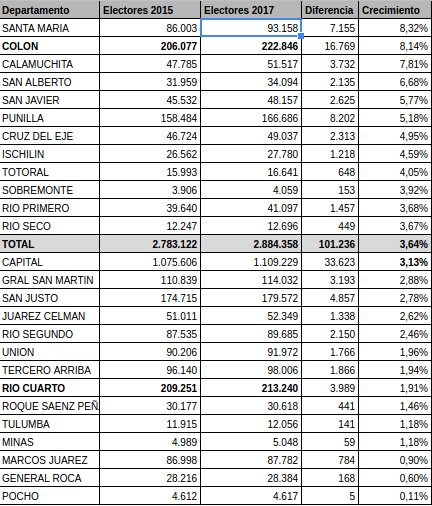
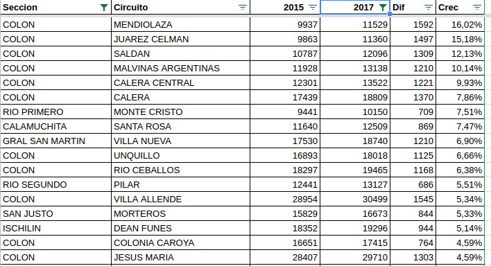
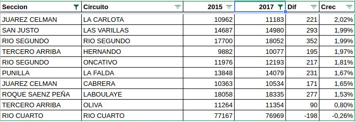
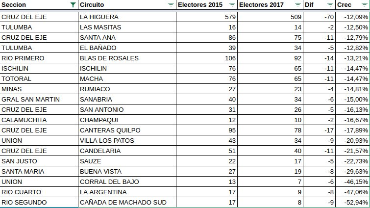
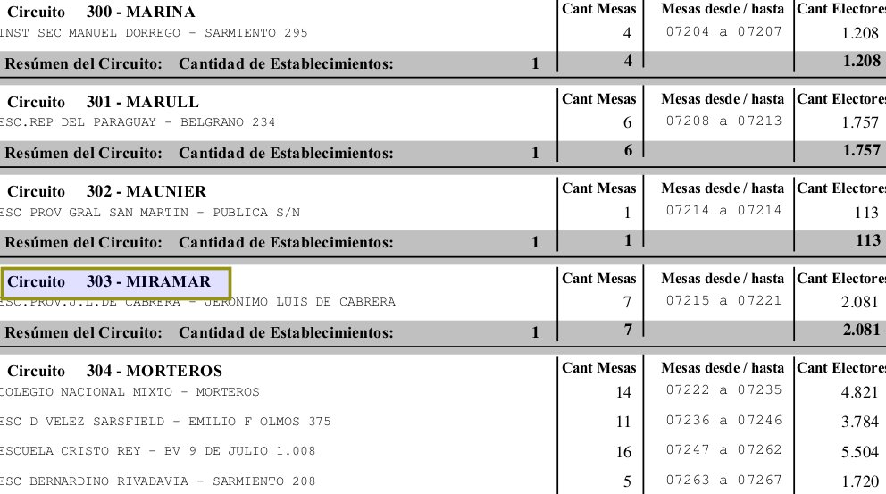

Cambios en el padrón electoral de Córdoba entre 2015 y 2017
Originalmente publicado como hilo en Twitter.
El Departamento Colón superó a Río Cuarto como segundo (después de Capital) en número de electores. Santa María es el de mayor crecimiento.

De las ciudades (>10.000 electores) la que más creció es Mendiolaza. El departamento Colón arrasa.

De esos circuitos (ciudades) el único que decrece es Río Cuarto.

De todos los circuitos (ciudades) estos están en vías de convertirse en pueblos fantasmas o desaparecer.

Nota al pie. El único de los 631 Circuitos Electorales de Córdoba que cambió de nombre entre 2015 y 2017 fue Miramar, que pasó a llamarse "Miramar de Anseunza".

Comentarios
Comments powered by Disqus